day06
课程说明¶
- 实现视频点赞、评论、关注功能
- 了解什么是即时通信
- 了解探花交友的消息功能
- 了解即时通信的技术方案
- 了解环信的即时通讯
- 实现环信的用户体系集成
- 实现添加联系人、联系人列表功能
1、视频点赞¶
点赞逻辑与圈子点赞逻辑一致，所以可以复用圈子点赞的逻辑，需要注意的是点赞对象是Video，设置publishUserId的逻辑也需要完善下。
1.1、dubbo服务¶
修改保存Comment逻辑，在原有逻辑中增加对小视频的支持：
//com.tanhua.dubbo.server.api.QuanZiApiImpl
/**
* 保存Comment
*
* @return
*/
private Boolean saveComment(Long userId, String publishId,
CommentType commentType, String content) {
try {
Comment comment = new Comment();
comment.setId(ObjectId.get());
comment.setUserId(userId);
comment.setPublishId(new ObjectId(publishId));
// 评论类型
comment.setCommentType(commentType.getType());
// 内容
comment.setContent(content);
comment.setCreated(System.currentTimeMillis());
Publish publish = this.queryPublishById(publishId);
if (ObjectUtil.isNotEmpty(publish)) {
comment.setPublishUserId(publish.getUserId());
} else {
//查询评论
Comment myComment = this.queryCommentById(publishId);
if(ObjectUtil.isNotEmpty(myComment)){
comment.setPublishUserId(myComment.getUserId());
}else{
//查询小视频
Video video = this.videoApi.queryVideoById(publishId);
if(ObjectUtil.isNotEmpty(video)){
comment.setPublishUserId(video.getUserId());
}else{
// 其他情况，直接返回
return false;
}
}
}
this.mongoTemplate.save(comment);
return true;
} catch (Exception e) {
log.error("保存Comment出错~ userId = " + userId + ", publishId = " + publishId + ", commentType = " + commentType, e);
}
return false;
}
在VideoApi中定义根据id查询Video的方法：
// com.tanhua.dubbo.server.api.VideoApi
/**
* 根据id查询视频对象
*
* @param videoId 小视频id
* @return
*/
Video queryVideoById(String videoId);
编写实现：
// com.tanhua.dubbo.server.api.VideoApiImpl
@Override
public Video queryVideoById(String videoId) {
return this.mongoTemplate.findById(new ObjectId(videoId), Video.class);
}
1.2、APP接口服务¶
接口地址：
- 点赞 https://mock-java.itheima.net/project/35/interface/api/827
- 取消点赞：https://mock-java.itheima.net/project/35/interface/api/833
1.2.1、VideoController¶
/**
* 视频点赞
*
* @param videoId 视频id
* @return
*/
@PostMapping("/{id}/like")
public ResponseEntity<Long> likeComment(@PathVariable("id") String videoId) {
try {
Long likeCount = this.videoService.likeComment(videoId);
if (likeCount != null) {
return ResponseEntity.ok(likeCount);
}
} catch (Exception e) {
e.printStackTrace();
}
return ResponseEntity.status(HttpStatus.INTERNAL_SERVER_ERROR).build();
}
/**
* 取消点赞
*
* @param videoId
* @return
*/
@PostMapping("/{id}/dislike")
public ResponseEntity<Long> disLikeComment(@PathVariable("id") String videoId) {
try {
Long likeCount = this.videoService.disLikeComment(videoId);
if (null != likeCount) {
return ResponseEntity.ok(likeCount);
}
} catch (Exception e) {
e.printStackTrace();
}
return ResponseEntity.status(HttpStatus.INTERNAL_SERVER_ERROR).build();
}
1.2.2、VideoService¶
//com.tanhua.server.service.VideoService
/**
* 点赞
*
* @param videoId
* @return
*/
public Long likeComment(String videoId) {
User user = UserThreadLocal.get();
Boolean result = this.quanZiApi.likeComment(user.getId(), videoId);
if (result) {
return this.quanZiApi.queryLikeCount(videoId);
}
return null;
}
/**
* 取消点赞
*
* @param videoId
* @return
*/
public Long disLikeComment(String videoId) {
User user = UserThreadLocal.get();
Boolean result = this.quanZiApi.disLikeComment(user.getId(), videoId);
if (result) {
return this.quanZiApi.queryLikeCount(videoId);
}
return null;
}
1.2.3、修改点赞数查询¶
在查询小视频列表中，需要完善之前TODO的部分。
//com.tanhua.server.service.VideoService
public PageResult queryVideoList(Integer page, Integer pageSize) {
User user = UserThreadLocal.get();
PageResult pageResult = new PageResult();
pageResult.setPage(page);
pageResult.setPagesize(pageSize);
PageInfo<Video> pageInfo = this.videoApi.queryVideoList(user.getId(), page, pageSize);
List<Video> records = pageInfo.getRecords();
if (CollUtil.isEmpty(records)) {
return pageResult;
}
//查询用户信息
List<Object> userIds = CollUtil.getFieldValues(records, "userId");
List<UserInfo> userInfoList = this.userInfoService.queryUserInfoByUserIdList(userIds);
List<VideoVo> videoVoList = new ArrayList<>();
for (Video record : records) {
VideoVo videoVo = new VideoVo();
videoVo.setUserId(record.getUserId());
videoVo.setCover(record.getPicUrl());
videoVo.setVideoUrl(record.getVideoUrl());
videoVo.setId(record.getId().toHexString());
videoVo.setSignature("我就是我~"); //TODO 签名
videoVo.setCommentCount(0); //TODO 评论数
videoVo.setHasFocus(0); //TODO 是否关注
videoVo.setHasLiked(this.quanZiApi.queryUserIsLike(user.getId(), videoVo.getId()) ? 1 : 0); //是否点赞（1是，0否）
videoVo.setLikeCount(Convert.toInt(this.quanZiApi.queryLikeCount(videoVo.getId())));//点赞数
//填充用户信息
for (UserInfo userInfo : userInfoList) {
if (ObjectUtil.equals(videoVo.getUserId(), userInfo.getUserId())) {
videoVo.setNickname(userInfo.getNickName());
videoVo.setAvatar(userInfo.getLogo());
break;
}
}
videoVoList.add(videoVo);
}
pageResult.setItems(videoVoList);
return pageResult;
}
2、视频评论¶
小视频的评论与圈子的评论逻辑类似，所以也可以使用同一套逻辑，所以只需要开发APP接口功能即可。
评论相关的接口定义：
- 发布评论：https://mock-java.itheima.net/project/35/interface/api/857
- 评论列表：https://mock-java.itheima.net/project/35/interface/api/851
- 评论点赞：https://mock-java.itheima.net/project/35/interface/api/863
- 评论取消点赞：https://mock-java.itheima.net/project/35/interface/api/869
2.1、VideoController¶
//com.tanhua.server.controller.VideoController
/**
* 评论列表
*/
@GetMapping("/{id}/comments")
public ResponseEntity<PageResult> queryCommentsList(@PathVariable("id") String videoId,
@RequestParam(value = "page", defaultValue = "1") Integer page,
@RequestParam(value = "pagesize", defaultValue = "10") Integer pageSize) {
try {
PageResult pageResult = this.videoService.queryCommentList(videoId, page, pageSize);
return ResponseEntity.ok(pageResult);
} catch (Exception e) {
e.printStackTrace();
}
return ResponseEntity.status(HttpStatus.INTERNAL_SERVER_ERROR).build();
}
/**
* 提交评论
*
* @param param
* @param videoId
* @return
*/
@PostMapping("/{id}/comments")
public ResponseEntity<Void> saveComments(@RequestBody Map<String, String> param,
@PathVariable("id") String videoId) {
try {
String content = param.get("comment");
Boolean result = this.videoService.saveComment(videoId, content);
if (result) {
return ResponseEntity.ok(null);
}
} catch (Exception e) {
e.printStackTrace();
}
return ResponseEntity.status(HttpStatus.INTERNAL_SERVER_ERROR).build();
}
/**
* 评论点赞
*
* @param videoCommentId 视频中的评论id
* @return
*/
@PostMapping("/comments/{id}/like")
public ResponseEntity<Long> commentsLikeComment(@PathVariable("id") String videoCommentId) {
try {
Long likeCount = this.videoService.likeComment(videoCommentId);
if (likeCount != null) {
return ResponseEntity.ok(likeCount);
}
} catch (Exception e) {
e.printStackTrace();
}
return ResponseEntity.status(HttpStatus.INTERNAL_SERVER_ERROR).build();
}
/**
* 评论取消点赞
*
* @param videoCommentId 视频中的评论id
* @return
*/
@PostMapping("/comments/{id}/dislike")
public ResponseEntity<Long> disCommentsLikeComment(@PathVariable("id") String videoCommentId) {
try {
Long likeCount = this.videoService.disLikeComment(videoCommentId);
if (null != likeCount) {
return ResponseEntity.ok(likeCount);
}
} catch (Exception e) {
e.printStackTrace();
}
return ResponseEntity.status(HttpStatus.INTERNAL_SERVER_ERROR).build();
}
2.2、VideoService¶
// com.tanhua.server.service.VideoService
public PageResult queryCommentList(String videoId, Integer page, Integer pageSize) {
return this.quanZiService.queryCommentList(videoId, page, pageSize);
}
public Boolean saveComment(String videoId, String content) {
return this.quanZiService.saveComments(videoId, content);
}
2.3、查询评论数¶
在小视频列表查询结果中，需要返回该视频的评论数据，由于之前在dubbo服务中没有提供查询方法，所以需要先实现查询方法。
2.3.1、dubbo服务¶
2.3.1.1、定义接口¶
//com.tanhua.dubbo.server.api.QuanZiApi
/**
* 查询评论数
*
* @param publishId
* @return
*/
Long queryCommentCount(String publishId);
2.3.1.2、编写实现¶
// com.tanhua.dubbo.server.api.QuanZiApiImpl
@Override
public Long queryCommentCount(String publishId) {
return this.queryCommentCount(publishId, CommentType.COMMENT);
}
2.3.2、查询评论数¶
//com.tanhua.server.service.VideoService
public PageResult queryVideoList(Integer page, Integer pageSize) {
User user = UserThreadLocal.get();
PageResult pageResult = new PageResult();
pageResult.setPage(page);
pageResult.setPagesize(pageSize);
PageInfo<Video> pageInfo = this.videoApi.queryVideoList(user.getId(), page, pageSize);
List<Video> records = pageInfo.getRecords();
if (CollUtil.isEmpty(records)) {
return pageResult;
}
//查询用户信息
List<Object> userIds = CollUtil.getFieldValues(records, "userId");
List<UserInfo> userInfoList = this.userInfoService.queryUserInfoByUserIdList(userIds);
List<VideoVo> videoVoList = new ArrayList<>();
for (Video record : records) {
VideoVo videoVo = new VideoVo();
videoVo.setUserId(record.getUserId());
videoVo.setCover(record.getPicUrl());
videoVo.setVideoUrl(record.getVideoUrl());
videoVo.setId(record.getId().toHexString());
videoVo.setSignature("我就是我~"); //TODO 签名
videoVo.setCommentCount(Convert.toInt(this.quanZiApi.queryCommentCount(videoVo.getId()))); //评论数
videoVo.setHasFocus(0); //TODO 是否关注
videoVo.setHasLiked(this.quanZiApi.queryUserIsLike(user.getId(), videoVo.getId()) ? 1 : 0); //是否点赞（1是，0否）
videoVo.setLikeCount(Convert.toInt(this.quanZiApi.queryLikeCount(videoVo.getId())));//点赞数
//填充用户信息
for (UserInfo userInfo : userInfoList) {
if (ObjectUtil.equals(videoVo.getUserId(), userInfo.getUserId())) {
videoVo.setNickname(userInfo.getNickName());
videoVo.setAvatar(userInfo.getLogo());
break;
}
}
videoVoList.add(videoVo);
}
pageResult.setItems(videoVoList);
return pageResult;
}
2.4、测试¶
3、关注用户¶
关注用户是关注小视频发布的作者，需要在dubbo服务中提供给相关的服务。
3.1、dubbo服务¶
3.1.1、FollowUser¶
package com.tanhua.dubbo.server.pojo;
import lombok.AllArgsConstructor;
import lombok.Data;
import lombok.NoArgsConstructor;
import org.bson.types.ObjectId;
import org.springframework.data.mongodb.core.mapping.Document;
/**
* 关注用户
*/
@Data
@NoArgsConstructor
@AllArgsConstructor
@Document(collection = "follow_user")
public class FollowUser implements java.io.Serializable{
private static final long serialVersionUID = 3148619072405056052L;
private ObjectId id; //主键id
private Long userId; //用户id
private Long followUserId; //关注的用户id
private Long created; //关注时间
}
3.1.2、定义接口¶
//com.tanhua.dubbo.server.api.VideoApi
/**
* 关注用户
*
* @param userId 当前用户
* @param followUserId 关注的目标用户
* @return
*/
Boolean followUser(Long userId, Long followUserId);
/**
* 取消关注用户
*
* @param userId 当前用户
* @param followUserId 关注的目标用户
* @return
*/
Boolean disFollowUser(Long userId, Long followUserId);
/**
* 查询用户是否关注某个用户
*
* @param userId 当前用户
* @param followUserId 关注的目标用户
* @return
*/
Boolean isFollowUser(Long userId, Long followUserId);
3.1.3、编写实现¶
//com.tanhua.dubbo.server.api.VideoApiImpl
private static final String VIDEO_FOLLOW_USER_KEY_PREFIX = "VIDEO_FOLLOW_USER_";
@Override
public Boolean followUser(Long userId, Long followUserId) {
if (!ObjectUtil.isAllNotEmpty(userId, followUserId)) {
return false;
}
try {
//需要将用户的关注列表，保存到redis中，方便后续的查询
//使用redis的hash结构
if (this.isFollowUser(userId, followUserId)) {
return false;
}
FollowUser followUser = new FollowUser();
followUser.setId(ObjectId.get());
followUser.setUserId(userId);
followUser.setFollowUserId(followUserId);
followUser.setCreated(System.currentTimeMillis());
this.mongoTemplate.save(followUser);
//保存数据到redis
String redisKey = this.getVideoFollowUserKey(userId);
String hashKey = String.valueOf(followUserId);
this.redisTemplate.opsForHash().put(redisKey, hashKey, "1");
return true;
} catch (Exception e) {
e.printStackTrace();
}
return false;
}
@Override
public Boolean disFollowUser(Long userId, Long followUserId) {
if (!ObjectUtil.isAllNotEmpty(userId, followUserId)) {
return false;
}
if (!this.isFollowUser(userId, followUserId)) {
return false;
}
//取消关注，删除关注数据即可
Query query = Query.query(Criteria.where("userId").is(userId)
.and("followUserId").is(followUserId)
);
DeleteResult result = this.mongoTemplate.remove(query, FollowUser.class);
if (result.getDeletedCount() > 0) {
//同时删除redis中的数据
String redisKey = this.getVideoFollowUserKey(userId);
String hashKey = String.valueOf(followUserId);
this.redisTemplate.opsForHash().delete(redisKey, hashKey);
return true;
}
return false;
}
@Override
public Boolean isFollowUser(Long userId, Long followUserId) {
String redisKey = this.getVideoFollowUserKey(userId);
String hashKey = String.valueOf(followUserId);
return this.redisTemplate.opsForHash().hasKey(redisKey, hashKey);
}
private String getVideoFollowUserKey(Long userId) {
return VIDEO_FOLLOW_USER_KEY_PREFIX + userId;
}
3.2、APP服务¶
关注用户：https://mock-java.itheima.net/project/35/interface/api/839
取消关注：https://mock-java.itheima.net/project/35/interface/api/845
3.2.1、VideoController¶
//com.tanhua.server.controller.VideoController
/**
* 视频用户关注
*/
@PostMapping("/{id}/userFocus")
public ResponseEntity<Void> saveUserFocusComments(@PathVariable("id") Long userId) {
try {
Boolean bool = this.videoService.followUser(userId);
if (bool) {
return ResponseEntity.ok(null);
}
} catch (Exception e) {
e.printStackTrace();
}
return ResponseEntity.status(HttpStatus.INTERNAL_SERVER_ERROR).build();
}
/**
* 取消视频用户关注
*/
@PostMapping("/{id}/userUnFocus")
public ResponseEntity<Void> saveUserUnFocusComments(@PathVariable("id") Long userId) {
try {
Boolean bool = this.videoService.disFollowUser(userId);
if (bool) {
return ResponseEntity.ok(null);
}
} catch (Exception e) {
e.printStackTrace();
}
return ResponseEntity.status(HttpStatus.INTERNAL_SERVER_ERROR).build();
}
3.2.2、VideoService¶
//com.tanhua.server.service.VideoService
/**
* 关注用户
*
* @param userId
* @return
*/
public Boolean followUser(Long userId) {
User user = UserThreadLocal.get();
return this.videoApi.followUser(user.getId(), userId);
}
/**
* 取消关注
*
* @param userId
* @return
*/
public Boolean disFollowUser(Long userId) {
User user = UserThreadLocal.get();
return this.videoApi.disFollowUser(user.getId(), userId);
}
3.2.3、查询是否关注¶
//com.tanhua.server.service.VideoService
public PageResult queryVideoList(Integer page, Integer pageSize) {
User user = UserThreadLocal.get();
PageResult pageResult = new PageResult();
pageResult.setPage(page);
pageResult.setPagesize(pageSize);
PageInfo<Video> pageInfo = this.videoApi.queryVideoList(user.getId(), page, pageSize);
List<Video> records = pageInfo.getRecords();
if (CollUtil.isEmpty(records)) {
return pageResult;
}
//查询用户信息
List<Object> userIds = CollUtil.getFieldValues(records, "userId");
List<UserInfo> userInfoList = this.userInfoService.queryUserInfoByUserIdList(userIds);
List<VideoVo> videoVoList = new ArrayList<>();
for (Video record : records) {
VideoVo videoVo = new VideoVo();
videoVo.setUserId(record.getUserId());
videoVo.setCover(record.getPicUrl());
videoVo.setVideoUrl(record.getVideoUrl());
videoVo.setId(record.getId().toHexString());
videoVo.setSignature("我就是我~"); //TODO 签名
videoVo.setCommentCount(Convert.toInt(this.quanZiApi.queryCommentCount(videoVo.getId()))); //评论数
videoVo.setHasFocus(this.videoApi.isFollowUser(user.getId(), videoVo.getUserId()) ? 1 : 0); //是否关注
videoVo.setHasLiked(this.quanZiApi.queryUserIsLike(user.getId(), videoVo.getId()) ? 1 : 0); //是否点赞（1是，0否）
videoVo.setLikeCount(Convert.toInt(this.quanZiApi.queryLikeCount(videoVo.getId())));//点赞数
//填充用户信息
for (UserInfo userInfo : userInfoList) {
if (ObjectUtil.equals(videoVo.getUserId(), userInfo.getUserId())) {
videoVo.setNickname(userInfo.getNickName());
videoVo.setAvatar(userInfo.getLogo());
break;
}
}
videoVoList.add(videoVo);
}
pageResult.setItems(videoVoList);
return pageResult;
}
3.3、测试¶

可以看到，已经完成了关注用户。
4、即时通信¶
4.1、什么是即时通信？¶

4.2、功能说明¶
在探花交友项目中也提供了类似微信的聊天功能，用户可以和好友或陌生人聊天。
如果是陌生人，通过《聊一下》功能进行打招呼，如果对方同意后，就成为了好友，可以进行聊天了。
陌生人之间如果相互喜欢，那么就会成为好友，也就可以聊天了。
在消息界面中也可以查看：点赞、评论、喜欢、公告等消息信息。

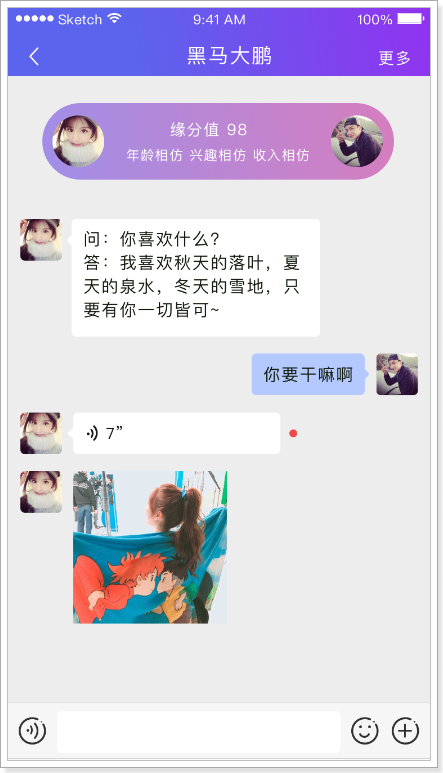

5、技术方案¶
对于高并发的即时通讯实现，还是很有挑战的，所需要考虑的点非常多，除了要实现功能，还要考虑并发、流量、负载、服务器、容灾等等。虽然有难度也并不是高不可攀。
对于现实即时通讯往往有两种方案：
- 方案一：
- 自主实现，从设计到架构，再到实现。
- 技术方面可以采用：Netty + WebSocket + RocketMQ + MongoDB + Redis + ZooKeeper + MySQL

- 方案二：
- 对接第三方服务完成。
- 这种方式简单，只需要按照第三方的api进行对接就可以了。
- 如：环信、网易、容联云通讯等。
如何选择呢？
如果是中大型企业做项目可以选择自主研发，如果是中小型企业研发中小型的项目，选择第二种方案即可。方案一需要有大量的人力、物力的支持，开发周期长，成本高，但可控性强。方案二，成本低，开发周期短，能够快速的集成起来进行功能的开发，只是在可控性方面来说就差了一些。
探花交友项目选择方案二进行实现。
6、环信¶
官网：https://www.easemob.com/ 稳定健壮，消息必达，亿级并发的即时通讯云
环信平台为黑马学员开设的专用注册地址：https://datayi.cn/w/woVL50vR


6.1、开发简介¶
文档地址：http://docs-im.easemob.com/
平台架构：
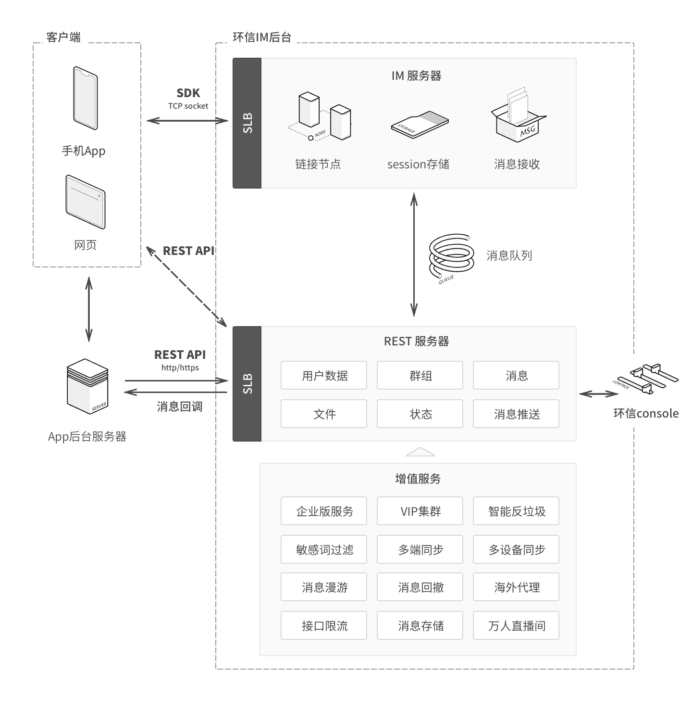
集成：
环信和用户体系的集成主要发生在2个地方，服务器端集成和客户端集成。

探花集成：
- 探花前端使用AndroidSDK进行集成
- 文档：http://docs-im.easemob.com/im/android/sdk/import
- 后端集成用户体系
- 文档：http://docs-im.easemob.com/im/server/ready/user
6.2、环信Console¶
需要使用环信平台，那么必须要进行注册，登录之后即可创建应用。环信100以内的用户免费使用，100以上就要注册企业版了。
企业版价格：

创建应用：

创建完成：

6.3、整体流程图¶
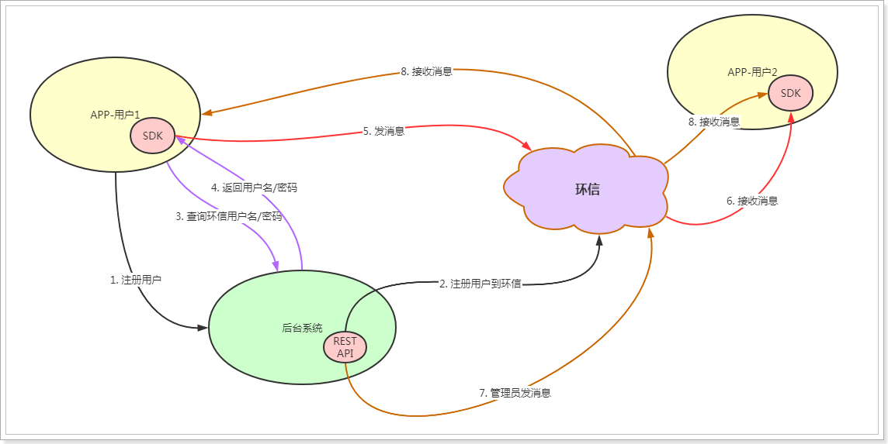
说明：
- 在APP端与后端系统，都需要完成与环信的集成。
- 在APP端，使用Android的SDK与环信进行通信，通信时需要通过后台系统的接口查询当前用户的环信用户名和密码，进行登录环信。
- 后台系统，在用户注册后，同步注册环信用户到环信平台，在后台系统中保存环信的用户名和密码。
- APP拿到用户名和密码后，进行登录环信，登录成功后即可向环信发送消息给好友。
- 后台系统也可以通过管理员的身份给用户发送系统信息。
7、获取管理员权限¶
环信提供的 REST API 需要权限才能访问，权限通过发送 HTTP 请求时携带 token 来体现。
官方文档：获取管理员权限
与环信的集成，我们将相关的代码逻辑写入到新的dubbo工程中，名字叫：my-tanhua-dubbo-huanxin。
7.1、创建dubbo工程¶
pom.xml：
<?xml version="1.0" encoding="UTF-8"?>
<project xmlns="http://maven.apache.org/POM/4.0.0"
xmlns:xsi="http://www.w3.org/2001/XMLSchema-instance"
xsi:schemaLocation="http://maven.apache.org/POM/4.0.0 http://maven.apache.org/xsd/maven-4.0.0.xsd">
<parent>
<artifactId>my-tanhua-dubbo</artifactId>
<groupId>cn.itcast.tanhua</groupId>
<version>1.0-SNAPSHOT</version>
</parent>
<modelVersion>4.0.0</modelVersion>
<artifactId>my-tanhua-dubbo-huanxin</artifactId>
<dependencies>
<!--引入interface依赖-->
<dependency>
<groupId>cn.itcast.tanhua</groupId>
<artifactId>my-tanhua-dubbo-interface</artifactId>
<version>1.0-SNAPSHOT</version>
</dependency>
<dependency>
<groupId>org.springframework.boot</groupId>
<artifactId>spring-boot-starter</artifactId>
</dependency>
<dependency>
<groupId>org.springframework.boot</groupId>
<artifactId>spring-boot-starter-data-redis</artifactId>
</dependency>
<dependency>
<groupId>org.springframework.boot</groupId>
<artifactId>spring-boot-starter-test</artifactId>
<scope>test</scope>
</dependency>
<dependency>
<groupId>com.baomidou</groupId>
<artifactId>mybatis-plus</artifactId>
</dependency>
<dependency>
<groupId>com.baomidou</groupId>
<artifactId>mybatis-plus-boot-starter</artifactId>
</dependency>
<dependency>
<groupId>mysql</groupId>
<artifactId>mysql-connector-java</artifactId>
</dependency>
<!--dubbo的springboot支持-->
<dependency>
<groupId>com.alibaba.boot</groupId>
<artifactId>dubbo-spring-boot-starter</artifactId>
</dependency>
<!--dubbo框架-->
<dependency>
<groupId>com.alibaba</groupId>
<artifactId>dubbo</artifactId>
</dependency>
<!--zk依赖-->
<dependency>
<groupId>org.apache.zookeeper</groupId>
<artifactId>zookeeper</artifactId>
</dependency>
<dependency>
<groupId>com.github.sgroschupf</groupId>
<artifactId>zkclient</artifactId>
</dependency>
<dependency>
<groupId>io.netty</groupId>
<artifactId>netty-all</artifactId>
</dependency>
<dependency>
<groupId>cn.hutool</groupId>
<artifactId>hutool-all</artifactId>
</dependency>
</dependencies>
</project>
application.properties:
# Spring boot application
spring.application.name = itcast-tanhua-dubbo-huanxin
# dubbo 扫描包配置
dubbo.scan.basePackages = com.tanhua.dubbo.server
dubbo.application.name = dubbo-provider-huanxin
#dubbo 对外暴露的端口信息
dubbo.protocol.name = dubbo
dubbo.protocol.port = 20881
#dubbo注册中心的配置
dubbo.registry.address = zookeeper://192.168.31.81:2181
dubbo.registry.client = zkclient
dubbo.registry.timeout = 60000
# Redis相关配置
spring.redis.jedis.pool.max-wait = 5000ms
spring.redis.jedis.pool.max-Idle = 100
spring.redis.jedis.pool.min-Idle = 10
spring.redis.timeout = 10s
spring.redis.cluster.nodes = 192.168.31.81:6379,192.168.31.81:6380,192.168.31.81:6381
spring.redis.cluster.max-redirects=5
#数据库连接信息
spring.datasource.driver-class-name=com.mysql.jdbc.Driver
spring.datasource.url=jdbc:mysql://192.168.31.81:3306/mytanhua?useUnicode=true&characterEncoding=utf8&autoReconnect=true&allowMultiQueries=true&useSSL=false
spring.datasource.username=root
spring.datasource.password=root
# 表名前缀
mybatis-plus.global-config.db-config.table-prefix=tb_
# id策略为自增长
mybatis-plus.global-config.db-config.id-type=auto
入口启动类：
package com.tanhua.dubbo.server;
import org.springframework.boot.SpringApplication;
import org.springframework.boot.autoconfigure.SpringBootApplication;
import org.springframework.boot.autoconfigure.data.mongo.MongoDataAutoConfiguration;
import org.springframework.boot.autoconfigure.mongo.MongoAutoConfiguration;
@SpringBootApplication(exclude = {MongoAutoConfiguration.class, MongoDataAutoConfiguration.class}) //排除mongo的自动配置
public class HuanXinDubboApplication {
public static void main(String[] args) {
SpringApplication.run(HuanXinDubboApplication.class, args);
}
}
7.2、配置¶
相关的配置，在环信管理控制台中，可以找到相关的参数。
#huanxin.properties
tanhua.huanxin.url=http://a1.easemob.com/
tanhua.huanxin.orgName=1105190515097562
tanhua.huanxin.appName=tanhua
tanhua.huanxin.clientId=YXA67ZofwHblEems-_Fh-17T2g
tanhua.huanxin.clientSecret=YXA60r45rNy2Ux5wQ7YYoEPwynHmUZk
编写配置类：
package com.tanhua.dubbo.server.config;
import lombok.Data;
import org.springframework.boot.context.properties.ConfigurationProperties;
import org.springframework.context.annotation.Configuration;
import org.springframework.context.annotation.PropertySource;
@Configuration
@PropertySource("classpath:huanxin.properties")
@ConfigurationProperties(prefix = "tanhua.huanxin")
@Data
public class HuanXinConfig {
private String url;
private String orgName;
private String appName;
private String clientId;
private String clientSecret;
}
7.3、编写实现¶
具体的获取token的业务逻辑在TokenService中完成。实现要点：
- 分析官方文档中的请求url、参数、响应数据等内容
- 请求到token需要缓存到redis中，不能频繁的获取token操作，可能会被封号
package com.tanhua.dubbo.server.service;
import cn.hutool.core.util.StrUtil;
import cn.hutool.http.HttpRequest;
import cn.hutool.http.HttpResponse;
import cn.hutool.json.JSONObject;
import cn.hutool.json.JSONUtil;
import com.tanhua.dubbo.server.config.HuanXinConfig;
import lombok.extern.slf4j.Slf4j;
import org.springframework.beans.factory.annotation.Autowired;
import org.springframework.data.redis.core.RedisTemplate;
import org.springframework.stereotype.Service;
import java.util.HashMap;
import java.util.Map;
import java.util.concurrent.TimeUnit;
@Service
@Slf4j
public class TokenService {
@Autowired
private RedisTemplate<String, String> redisTemplate;
private static final String REDIS_KEY = "HX_TOKEN";
@Autowired
private HuanXinConfig huanXinConfig;
/**
* 获取token，先从redis中获取，如果没有，再去环信接口获取
*
* @return
*/
public String getToken() {
String token = this.redisTemplate.opsForValue().get(REDIS_KEY);
if (StrUtil.isNotEmpty(token)) {
return token;
}
//访问环信接口获取token
return this.refreshToken();
}
/**
* 刷新token，请求环信接口，将token存储到redis中
*
* @return
*/
public String refreshToken() {
String targetUrl = this.huanXinConfig.getUrl() +
this.huanXinConfig.getOrgName() + "/" +
this.huanXinConfig.getAppName() + "/token";
Map<String, Object> param = new HashMap<>();
param.put("grant_type", "client_credentials");
param.put("client_id", this.huanXinConfig.getClientId());
param.put("client_secret", this.huanXinConfig.getClientSecret());
HttpResponse response = HttpRequest.post(targetUrl)
.body(JSONUtil.toJsonStr(param))
.timeout(20000) //请求超时时间
.execute();
if (!response.isOk()) {
log.error("刷新token失败~~~ ");
return null;
}
String jsonBody = response.body();
JSONObject jsonObject = JSONUtil.parseObj(jsonBody);
String token = jsonObject.getStr("access_token");
if (StrUtil.isNotEmpty(token)) {
//将token数据缓存到redis中，缓存时间由expires_in决定
//提前1小时失效
long timeout = jsonObject.getLong("expires_in") - 3600;
this.redisTemplate.opsForValue().set(REDIS_KEY, token, timeout, TimeUnit.SECONDS);
return token;
}
return null;
}
}
7.4、定义接口¶
接口定义在my-tanhua-dubbo-interface工程中。
package com.tanhua.dubbo.server.api;
/**
* 与环信平台集成的相关操作
*/
public interface HuanXinApi {
/**
* 获取环信token（获取管理员权限）
* 参见：http://docs-im.easemob.com/im/server/ready/user#%E8%8E%B7%E5%8F%96%E7%AE%A1%E7%90%86%E5%91%98%E6%9D%83%E9%99%90
*
* @return
*/
String getToken();
}
7.5、实现接口¶
在my-tanhua-dubbo-huanxin中完成。
package com.tanhua.dubbo.server.api;
@Service(version = "1.0.0")
@Slf4j
public class HuanXinApiImpl implements HuanXinApi {
@Autowired
private TokenService tokenService;
@Override
public String getToken() {
return this.tokenService.getToken();
}
}
7.6、测试¶
package com.tanhua.dubbo.server;
import com.tanhua.dubbo.server.api.HuanXinApi;
import org.junit.Test;
import org.junit.runner.RunWith;
import org.springframework.beans.factory.annotation.Autowired;
import org.springframework.boot.test.context.SpringBootTest;
import org.springframework.test.context.junit4.SpringRunner;
@SpringBootTest
@RunWith(SpringRunner.class)
public class TestHuanXinApi {
@Autowired
private HuanXinApi huanXinApi;
@Test
public void testGetToken(){
String token = this.huanXinApi.getToken();
System.out.println(token);
}
}
测试结果，已经保存到redis中了：
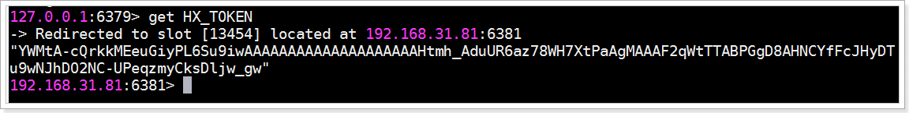
8、用户系统集成¶
使用环信平台，最重要的就是集成用户体系，基本的逻辑是这样的：新用户在注册后，同时需要注册环信用户。
流程如下：
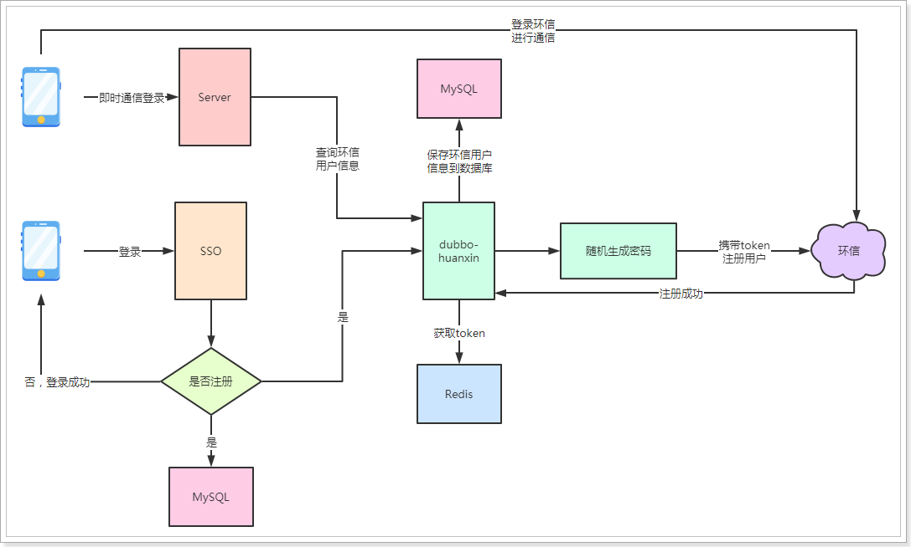
流程说明：
- 用户在登录时在sso系统中进行判断，如果是新用户，在注册完成后，需要调用dubbo中的环信服务进行注册环信用户。
- dubbo-huanxin服务在注册环信用户时，需要随机生成密码，携带token请求环信的REST API进行用户注册。
- 注册成功后，需要将环信的用户信息保存到MySQL中。
- 用户在APP端使用即时通讯功能时，需要通过环信用户信息登录到环信平台，由于数据存储到服务端，所以需要通过dubbo-huanxin进行查询。
- 在拿到环信账号信息后，登录环信，登录成功后即可与环信平台进行交互。
- 需要注意的是，APP端与环信平台交互，是不走后端系统的，是直连操作。
官方文档：《用户管理》
8.1、通用请求逻辑¶
在与环信接口通信时，使用的是环信的REST接口，所以我们需要封装一个通用的请求服务，在与所有环信接口对接时使用。
另外，请求接口时都需要携带token，前面我们已经将token存储到redis中，但是，可能存在这样一种情况，token在我们redis中有效，但是在环信平台已经失效，这样环信平台会给我们响应401状态码。
对于这种情况，我们就需要检测状态码是否为401，如果是401的话，就需要重新刷新token，再重新执行此次请求。
也就是要支持请求的重试。
8.1.1、Spring-Retry¶
Spring提供了重试的功能，使用非常的简单、优雅。
第一步，导入依赖：
<!--Spring重试模块-->
<dependency>
<groupId>org.springframework.retry</groupId>
<artifactId>spring-retry</artifactId>
</dependency>
<dependency>
<groupId>org.aspectj</groupId>
<artifactId>aspectjweaver</artifactId>
</dependency>
第二步，在启动类中添加@EnableRetry注解来激活重试功能：
package com.tanhua.dubbo.server;
import org.springframework.boot.SpringApplication;
import org.springframework.boot.autoconfigure.SpringBootApplication;
import org.springframework.boot.autoconfigure.data.mongo.MongoDataAutoConfiguration;
import org.springframework.boot.autoconfigure.mongo.MongoAutoConfiguration;
import org.springframework.retry.annotation.EnableRetry;
@SpringBootApplication(exclude = {MongoAutoConfiguration.class, MongoDataAutoConfiguration.class}) //排除mongo的自动配置
@EnableRetry
public class HuanXinDubboApplication {
public static void main(String[] args) {
SpringApplication.run(HuanXinDubboApplication.class, args);
}
}
第三步，在需要支持重试操作的Service方法中添加@Retryable注解，demo如下：
//将此类放到test包下测试即可
package com.tanhua.dubbo.server;
import cn.hutool.core.util.RandomUtil;
import org.springframework.retry.annotation.Backoff;
import org.springframework.retry.annotation.Recover;
import org.springframework.retry.annotation.Retryable;
import org.springframework.stereotype.Service;
@Service
public class RetryService {
@Retryable(value = RuntimeException.class, maxAttempts = 3, backoff = @Backoff(delay = 2000L, multiplier = 2))
public int execute(int max) {
int data = RandomUtil.randomInt(1, 99);
System.out.println("生成：" + data);
if (data < max) {
throw new RuntimeException();
}
return data;
}
@Recover //全部重试失败后执行
public int recover(Exception e) {
System.out.println("全部重试完成。。。。。");
return 88; //返回默认
}
}
@Retryable参数说明：
-
value：抛出指定异常才会重试
-
maxAttempts：最大重试次数，默认3次
-
backoff：重试等待策略，默认使用@Backoff
- @Backoff 的value默认为1000L，我们设置为2000L；
- multiplier（指定延迟倍数）默认为0，表示固定暂停1秒后进行重试，如果把multiplier设置为2，则第一次重试为2秒，第二次为4秒，第三次为6秒。
@Recover标注的方法，是在所有的重试都失败的情况下，最后执行该方法，该方法有2个要求：
- 方法的第一个参数必须是 Throwable 类型，最好与 @Retryable 中的 value一致。
- 方法的返回值必须与@Retryable的方法返回值一致，否则该方法不能被执行。
测试类：
package com.tanhua.dubbo.server;
import org.junit.Test;
import org.junit.runner.RunWith;
import org.springframework.beans.factory.annotation.Autowired;
import org.springframework.boot.test.context.SpringBootTest;
import org.springframework.test.context.junit4.SpringRunner;
@SpringBootTest
@RunWith(SpringRunner.class)
public class TestRetryService {
@Autowired
private RetryService retryService;
@Test
public void testRetry() {
System.out.println(this.retryService.execute(90));
}
}
测试结果，会有3次重试机会进行生成随机数，如果3次随机数都小于90，最后返回88。
8.1.2、RequestService¶
package com.tanhua.dubbo.server.service;
import cn.hutool.http.HttpRequest;
import cn.hutool.http.HttpResponse;
import cn.hutool.http.Method;
import com.tanhua.dubbo.server.exception.UnauthorizedException;
import lombok.extern.slf4j.Slf4j;
import org.springframework.beans.factory.annotation.Autowired;
import org.springframework.retry.annotation.Backoff;
import org.springframework.retry.annotation.Recover;
import org.springframework.retry.annotation.Retryable;
import org.springframework.stereotype.Service;
/**
* 环信接口通用请求服务
*/
@Service
@Slf4j
public class RequestService {
@Autowired
private TokenService tokenService;
/**
* 通用的发送请求方法
*
* @param url 请求地址
* @param body 请求参数
* @param method 请求方法
* @return
*/
@Retryable(value = UnauthorizedException.class, maxAttempts = 5, backoff = @Backoff(delay = 2000L, multiplier = 2))
public HttpResponse execute(String url, String body, Method method) {
String token = this.tokenService.getToken();
HttpRequest httpRequest;
switch (method) {
case POST: {
httpRequest = HttpRequest.post(url);
break;
}
case DELETE: {
httpRequest = HttpRequest.delete(url);
break;
}
case PUT: {
httpRequest = HttpRequest.put(url);
break;
}
case GET: {
httpRequest = HttpRequest.get(url);
break;
}
default: {
return null;
}
}
HttpResponse response = httpRequest
.header("Content-Type", "application/json") //设置请求内容类型
.header("Authorization", "Bearer " + token) //设置token
.body(body) // 设置请求数据
.timeout(20000) // 超时时间
.execute(); // 执行请求
if (response.getStatus() == 401) {
//token失效，重新刷新token
this.tokenService.refreshToken();
//抛出异常，需要进行重试
throw new UnauthorizedException(url, body, method);
}
return response;
}
@Recover //全部重试失败后执行
public HttpResponse recover(UnauthorizedException e) {
log.error("获取token失败！url = " + e.getUrl() + ", body = " + e.getBody() + ", method = " + e.getMethod().toString());
//如果重试5次后，依然不能获取到token，说明网络或账号出现了问题，只能返回null了，后续的请求将无法再执行
return null;
}
}
package com.tanhua.dubbo.server.exception;
import cn.hutool.http.Method;
import lombok.AllArgsConstructor;
import lombok.Data;
import lombok.NoArgsConstructor;
@AllArgsConstructor
@NoArgsConstructor
@Data
public class UnauthorizedException extends RuntimeException {
private String url;
private String body;
private Method method;
}
测试用例：
package com.tanhua.dubbo.server;
import cn.hutool.http.HttpResponse;
import cn.hutool.http.Method;
import com.tanhua.dubbo.server.config.HuanXinConfig;
import com.tanhua.dubbo.server.service.RequestService;
import org.junit.Test;
import org.junit.runner.RunWith;
import org.springframework.beans.factory.annotation.Autowired;
import org.springframework.boot.test.context.SpringBootTest;
import org.springframework.test.context.junit4.SpringRunner;
@SpringBootTest
@RunWith(SpringRunner.class)
public class TestRequestService {
@Autowired
private RequestService requestService;
@Autowired
private HuanXinConfig huanXinConfig;
@Test
public void testQueryHuanXinUser() {
String targetUrl = this.huanXinConfig.getUrl()
+ this.huanXinConfig.getOrgName() + "/"
+ this.huanXinConfig.getAppName() + "/users/1";
HttpResponse response = this.requestService.execute(targetUrl, null, Method.GET);
System.out.println(response);
}
}
8.2、注册环信用户¶
注册环信用户分为2种，开放注册、授权注册，区别在于开发注册不需要token，授权注册需要token。我们使用的授权注册。
官方文档：《注册单个用户(授权)》
说明：环信用户数据需要保存到数据中。
8.2.1、HuanXinUser¶
在my-tanhua-dubbo-interface工程中创建该类：
需要在此工程中添加MybatisPlus依赖：
<dependency>
<groupId>com.baomidou</groupId>
<artifactId>mybatis-plus</artifactId>
</dependency>
package com.tanhua.dubbo.server.pojo;
import com.baomidou.mybatisplus.annotation.TableName;
import lombok.AllArgsConstructor;
import lombok.Data;
import lombok.NoArgsConstructor;
import java.util.Date;
/**
* 环信用户对象
*/
@Data
@NoArgsConstructor
@AllArgsConstructor
@TableName("tb_huanxin_user")
public class HuanXinUser implements java.io.Serializable{
private static final long serialVersionUID = -6400630011196593976L;
private Long id; //主键Id
/**
* 环信 ID ;也就是 IM 用户名的唯一登录账号，长度不可超过64个字符长度
*/
private String username;
/**
* 登录密码，长度不可超过64个字符长度
*/
private String password;
/**
* 昵称（可选），在 iOS Apns 推送时会使用的昵称（仅在推送通知栏内显示的昵称），
* 并不是用户个人信息的昵称，环信是不保存用户昵称，头像等个人信息的，
* 需要自己服务器保存并与给自己用户注册的IM用户名绑定，长度不可超过100个字符
*/
private String nickname;
private Long userId; //用户id
private Date created; //创建时间
private Date updated; //更新时间
}
数据库表结构：
CREATE TABLE `tb_huanxin_user` (
`id` bigint(20) NOT NULL AUTO_INCREMENT,
`user_id` bigint(20) NOT NULL COMMENT '用户id',
`username` varchar(32) NOT NULL COMMENT '环信用户名',
`password` varchar(32) NOT NULL COMMENT '环信密码',
`nickname` varchar(100) DEFAULT NULL COMMENT '昵称',
`created` datetime DEFAULT NULL COMMENT '创建时间',
`updated` datetime DEFAULT NULL COMMENT '更新时间',
PRIMARY KEY (`id`),
KEY `user_id` (`user_id`),
KEY `username` (`username`)
) ENGINE=InnoDB AUTO_INCREMENT=1 DEFAULT CHARSET=utf8;
8.2.2、定义接口¶
//com.tanhua.dubbo.server.api.HuanXinApi
/**
* 注册环信用户
* 参见：http://docs-im.easemob.com/im/server/ready/user#%E6%B3%A8%E5%86%8C%E5%8D%95%E4%B8%AA%E7%94%A8%E6%88%B7_%E5%BC%80%E6%94%BE
*
* @param userId 用户id
* @return
*/
Boolean register(Long userId);
/**
* 根据用户Id询环信账户信息
*
* @param userId
* @return
*/
HuanXinUser queryHuanXinUser(Long userId);
8.2.3、实现接口¶
//com.tanhua.dubbo.server.api.HuanXinApiImpl
@Override
public Boolean register(Long userId) {
String targetUrl = this.huanXinConfig.getUrl()
+ this.huanXinConfig.getOrgName() + "/" +
this.huanXinConfig.getAppName() + "/users";
HuanXinUser huanXinUser = new HuanXinUser();
huanXinUser.setUsername("HX_" + userId); // 用户名
huanXinUser.setPassword(IdUtil.simpleUUID()); //随机生成的密码
HttpResponse response = this.requestService.execute(targetUrl, JSONUtil.toJsonStr(Arrays.asList(huanXinUser)), Method.POST);
if (response.isOk()) {
//将环信的账号信息保存到数据库
huanXinUser.setUserId(userId);
huanXinUser.setCreated(new Date());
huanXinUser.setUpdated(huanXinUser.getCreated());
this.huanXinUserMapper.insert(huanXinUser);
return true;
}
return false;
}
@Override
public HuanXinUser queryHuanXinUser(Long userId) {
QueryWrapper<HuanXinUser> wrapper = new QueryWrapper<>();
wrapper.eq("user_id", userId);
return this.huanXinUserMapper.selectOne(wrapper);
}
package com.tanhua.dubbo.server.mapper;
import com.baomidou.mybatisplus.core.mapper.BaseMapper;
import com.tanhua.dubbo.server.pojo.HuanXinUser;
import org.apache.ibatis.annotations.Mapper;
@Mapper
public interface HuanXinUserMapper extends BaseMapper<HuanXinUser> {
}
8.2.4、测试用例¶
package com.tanhua.dubbo.server;
import com.tanhua.dubbo.server.api.HuanXinApi;
import org.junit.Test;
import org.junit.runner.RunWith;
import org.springframework.beans.factory.annotation.Autowired;
import org.springframework.boot.test.context.SpringBootTest;
import org.springframework.test.context.junit4.SpringRunner;
@SpringBootTest
@RunWith(SpringRunner.class)
public class TestHuanXinApi {
@Autowired
private HuanXinApi huanXinApi;
@Test
public void testRegister(){
//注册用户id为1的用户到环信
System.out.println(this.huanXinApi.register(1L));
}
@Test
public void testQueryHuanXinUser(){
//根据用户id查询环信用户信息
System.out.println(this.huanXinApi.queryHuanXinUser(1L));
}
}
8.2.5、在sso中注册环信用户¶
需要在sso系统中使用dubbo服务进行注册环信用户。
第一步，导入依赖：
<dependency>
<groupId>cn.itcast.tanhua</groupId>
<artifactId>my-tanhua-dubbo-interface</artifactId>
<version>1.0-SNAPSHOT</version>
</dependency>
<!--dubbo的springboot支持-->
<dependency>
<groupId>com.alibaba.boot</groupId>
<artifactId>dubbo-spring-boot-starter</artifactId>
</dependency>
<!--dubbo框架-->
<dependency>
<groupId>com.alibaba</groupId>
<artifactId>dubbo</artifactId>
</dependency>
<!--zk依赖-->
<dependency>
<groupId>org.apache.zookeeper</groupId>
<artifactId>zookeeper</artifactId>
</dependency>
<dependency>
<groupId>com.github.sgroschupf</groupId>
<artifactId>zkclient</artifactId>
</dependency>
第二步，增加dubbo注册中心配置
application.properties：
#dubbo注册中心配置
dubbo.application.name = itcast-tanhua-server
dubbo.registry.address = zookeeper://192.168.31.81:2181
dubbo.registry.client = zkclient
dubbo.registry.timeout = 60000
dubbo.consumer.timeout = 60000
第三步，在UserService中增加相应的逻辑：
@Reference(version = "1.0.0")
private HuanXinApi huanXinApi;
/**
* 用户登录
*
* @param phone 手机号
* @param code 验证码
* @return
*/
public String login(String phone, String code) {
String redisKey = "CHECK_CODE_" + phone;
boolean isNew = false;
//校验验证码
String redisData = this.redisTemplate.opsForValue().get(redisKey);
if (!StringUtils.equals(code, redisData)) {
return null; //验证码错误
}
//验证码在校验完成后，需要废弃
this.redisTemplate.delete(redisKey);
QueryWrapper<User> queryWrapper = new QueryWrapper<>();
queryWrapper.eq("mobile", phone);
User user = this.userMapper.selectOne(queryWrapper);
if (null == user) {
//需要注册该用户
user = new User();
user.setMobile(phone);
user.setPassword(DigestUtils.md5Hex("123456"));
//注册新用户
this.userMapper.insert(user);
isNew = true;
//注册环信用户
Boolean result = this.huanXinApi.register(user.getId());
if (!result) {
//注册环信失败，记录日志
log.error("注册环信用户失败~ userId = " + user.getId());
}
}
//生成token
Map<String, Object> claims = new HashMap<String, Object>();
claims.put("id", user.getId());
// 生成token
String token = Jwts.builder()
.setClaims(claims) //payload，存放数据的位置，不能放置敏感数据，如：密码等
.signWith(SignatureAlgorithm.HS256, secret) //设置加密方法和加密盐
.setExpiration(new DateTime().plusHours(12).toDate()) //设置过期时间，12小时后过期
.compact();
try {
//发送用户登录成功的消息
Map<String, Object> msg = new HashMap<>();
msg.put("id", user.getId());
msg.put("date", System.currentTimeMillis());
this.rocketMQTemplate.convertAndSend("tanhua-sso-login", msg);
} catch (MessagingException e) {
log.error("发送消息失败！", e);
}
return token + "|" + isNew;
}
8.2.6、测试¶
将服务全部跑起来，使用APP进行测试，使用新手机号进行登录测试。
新注册的用户：
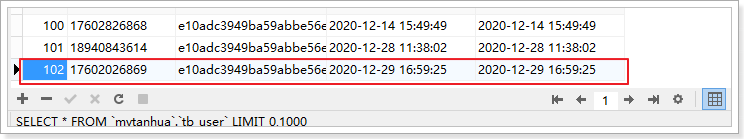
所对应的环信用户：

环信平台：
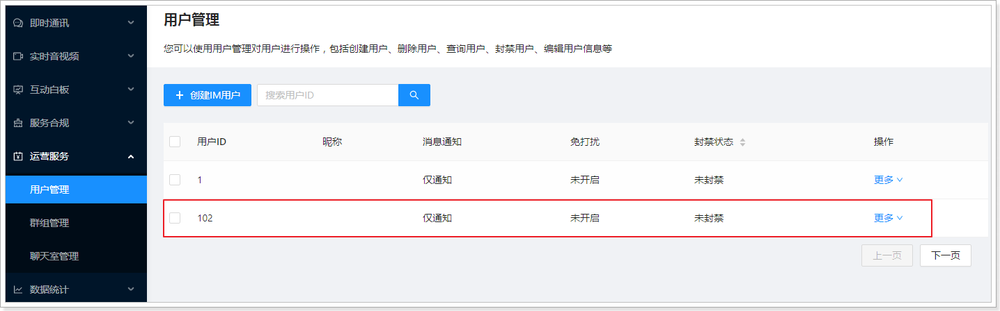
可以看到已经注册到了环信。
8.3、查询环信用户信息¶
在app中，用户登录后需要根据用户名密码登录环信，由于用户名密码保存在后台，所以需要提供接口进行返回。
mock地址： https://mock-java.itheima.net/project/35/interface/api/563

8.3.1、HuanXinUserVo¶
package com.tanhua.server.vo;
import lombok.AllArgsConstructor;
import lombok.Data;
import lombok.NoArgsConstructor;
@Data
@NoArgsConstructor
@AllArgsConstructor
public class HuanXinUserVo {
private String username;
private String password;
}
8.3.2、HuanXinController¶
package com.tanhua.server.controller;
import com.tanhua.server.service.HuanXinService;
import com.tanhua.server.vo.HuanXinUserVo;
import org.springframework.beans.factory.annotation.Autowired;
import org.springframework.http.ResponseEntity;
import org.springframework.web.bind.annotation.GetMapping;
import org.springframework.web.bind.annotation.RequestMapping;
import org.springframework.web.bind.annotation.RestController;
@RestController
@RequestMapping("huanxin")
public class HuanXinController {
@Autowired
private HuanXinService huanXinService;
@GetMapping("user")
public HuanXinUserVo queryHuanXinUser(){
return this.huanXinService.queryHuanXinUser();
}
}
8.3.3、HuanXinService¶
package com.tanhua.server.service;
import cn.hutool.core.util.ObjectUtil;
import com.alibaba.dubbo.config.annotation.Reference;
import com.tanhua.common.pojo.User;
import com.tanhua.common.utils.UserThreadLocal;
import com.tanhua.dubbo.server.api.HuanXinApi;
import com.tanhua.dubbo.server.pojo.HuanXinUser;
import com.tanhua.server.vo.HuanXinUserVo;
import org.springframework.stereotype.Service;
@Service
public class HuanXinService {
@Reference(version = "1.0.0")
private HuanXinApi huanXinApi;
public HuanXinUserVo queryHuanXinUser() {
User user = UserThreadLocal.get();
//通过dubbo服务查询环信用户
HuanXinUser huanXinUser = this.huanXinApi.queryHuanXinUser(user.getId());
if (ObjectUtil.isNotEmpty(huanXinUser)) {
return new HuanXinUserVo(huanXinUser.getUsername(), huanXinUser.getPassword());
}
return null;
}
}
8.3.4、测试¶

8.4、查询个人信息¶
在消息模块中，需要实现根据环信用户名查询个人的用户信息。
接口文档：https://mock-java.itheima.net/project/35/interface/api/2921
8.4.1、dubbo服务¶
8.4.1.1、定义接口¶
//com.tanhua.dubbo.server.api.HuanXinApi
/**
* 根据环信用户名查询用户信息
*
* @param userName
* @return
*/
HuanXinUser queryUserByUserName(String userName);
8.4.1.2、编写实现¶
//com.tanhua.dubbo.server.api.HuanXinApiImpl
@Override
public HuanXinUser queryUserByUserName(String userName) {
QueryWrapper<HuanXinUser> wrapper = new QueryWrapper<>();
wrapper.eq("username", userName);
return this.huanXinUserMapper.selectOne(wrapper);
}
8.4.2、APP接口服务¶
8.4.2.1、UserInfoVo¶
package com.tanhua.server.vo;
import cn.hutool.core.annotation.Alias;
import lombok.AllArgsConstructor;
import lombok.Data;
import lombok.NoArgsConstructor;
@Data
@AllArgsConstructor
@NoArgsConstructor
public class UserInfoVo {
@Alias("userId")
private Long id; //用户id
@Alias("logo")
private String avatar; //头像
@Alias("nickName")
private String nickname; //昵称
private String birthday; //生日 2019-09-11
private String age; //年龄
private String gender; //性别 man woman
private String city; //城市
@Alias("edu")
private String education; //学历
private String income; //月收入
@Alias("industry")
private String profession; //行业
private Integer marriage; //婚姻状态（0未婚，1已婚）
}
8.4.2.2、IMController¶
//com.tanhua.server.controller.IMController
package com.tanhua.server.controller;
import cn.hutool.core.util.ObjectUtil;
import com.tanhua.server.service.IMService;
import com.tanhua.server.vo.UserInfoVo;
import lombok.extern.slf4j.Slf4j;
import org.springframework.beans.factory.annotation.Autowired;
import org.springframework.http.HttpStatus;
import org.springframework.http.ResponseEntity;
import org.springframework.web.bind.annotation.GetMapping;
import org.springframework.web.bind.annotation.RequestMapping;
import org.springframework.web.bind.annotation.RequestParam;
import org.springframework.web.bind.annotation.RestController;
@RequestMapping("messages")
@RestController
@Slf4j
public class IMController {
@Autowired
private IMService imService;
/**
* 根据环信用户名查询用户信息
*
* @param userName 环信用户
* @return
*/
@GetMapping("userinfo")
public ResponseEntity<UserInfoVo> queryUserInfoByUserName(@RequestParam("huanxinId") String userName) {
try {
UserInfoVo userInfoVo = this.imService.queryUserInfoByUserName(userName);
if (ObjectUtil.isNotEmpty(userInfoVo)) {
return ResponseEntity.ok(userInfoVo);
}
} catch (Exception e) {
log.error("根据环信id查询用户信息! userName = " + userName, e);
}
return ResponseEntity.status(HttpStatus.INTERNAL_SERVER_ERROR).build();
}
}
8.4.2.3、IMService¶
//com.tanhua.server.service.IMService
package com.tanhua.server.service;
import cn.hutool.core.bean.BeanUtil;
import cn.hutool.core.util.ObjectUtil;
import cn.hutool.core.util.StrUtil;
import com.alibaba.dubbo.config.annotation.Reference;
import com.tanhua.common.pojo.UserInfo;
import com.tanhua.dubbo.server.api.HuanXinApi;
import com.tanhua.dubbo.server.pojo.HuanXinUser;
import com.tanhua.server.vo.UserInfoVo;
import org.springframework.beans.factory.annotation.Autowired;
import org.springframework.stereotype.Service;
@Service
public class IMService {
@Reference(version = "1.0.0")
private HuanXinApi huanXinApi;
@Autowired
private UserInfoService userInfoService;
public UserInfoVo queryUserInfoByUserName(String userName) {
//查询环信账户
HuanXinUser huanXinUser = this.huanXinApi.queryUserByUserName(userName);
if (ObjectUtil.isEmpty(huanXinUser)) {
return null;
}
//查询用户信息
UserInfo userInfo = this.userInfoService.queryUserInfoByUserId(huanXinUser.getUserId());
if (ObjectUtil.isEmpty(userInfo)) {
return null;
}
UserInfoVo userInfoVo = BeanUtil.copyProperties(userInfo, UserInfoVo.class, "marriage");
userInfoVo.setGender(userInfo.getSex().toString().toLowerCase());
userInfoVo.setMarriage(StrUtil.equals("已婚", userInfo.getMarriage()) ? 1 : 0);
return userInfoVo;
}
}
8.4.2.4、测试¶

8.5、根据用户id查询个人信息¶
在消息模块与我的模块中，需要根据用户id查询个人信息，其响应的数据结构与上面一致，均为：UserInfoVo对象。
接口地址：https://mock-java.itheima.net/project/35/interface/api/875
8.5.1、MyCenterController¶
package com.tanhua.server.controller;
import cn.hutool.core.util.ObjectUtil;
import com.tanhua.server.service.MyCenterService;
import com.tanhua.server.vo.UserInfoVo;
import lombok.extern.slf4j.Slf4j;
import org.springframework.beans.factory.annotation.Autowired;
import org.springframework.http.HttpStatus;
import org.springframework.http.ResponseEntity;
import org.springframework.web.bind.annotation.GetMapping;
import org.springframework.web.bind.annotation.RequestMapping;
import org.springframework.web.bind.annotation.RequestParam;
import org.springframework.web.bind.annotation.RestController;
@RequestMapping("users")
@RestController
@Slf4j
public class MyCenterController {
@Autowired
private MyCenterService myCenterService;
/**
* 根据用户id查询用户信息
*
* @param userId 用户id，如果为空，表示查询当前登录人的信息
* @return
*/
@GetMapping
public ResponseEntity<UserInfoVo> queryUserInfoByUserId(@RequestParam(value = "userID", required = false) Long userId) {
try {
UserInfoVo userInfoVo = this.myCenterService.queryUserInfoByUserId(userId);
if (ObjectUtil.isNotEmpty(userInfoVo)) {
return ResponseEntity.ok(userInfoVo);
}
} catch (Exception e) {
log.error("根据用户id查询用户信息出错~ userId = " + userId, e);
}
return ResponseEntity.status(HttpStatus.INTERNAL_SERVER_ERROR).build();
}
}
8.5.2、MyCenterService¶
package com.tanhua.server.service;
import cn.hutool.core.bean.BeanUtil;
import cn.hutool.core.util.ObjectUtil;
import cn.hutool.core.util.StrUtil;
import com.tanhua.common.pojo.UserInfo;
import com.tanhua.common.utils.UserThreadLocal;
import com.tanhua.server.vo.UserInfoVo;
import org.springframework.beans.factory.annotation.Autowired;
import org.springframework.stereotype.Service;
@Service
public class MyCenterService {
@Autowired
private UserInfoService userInfoService;
public UserInfoVo queryUserInfoByUserId(Long userId) {
if (ObjectUtil.isEmpty(userId)) {
//如果查询id为null，就表示查询当前用户信息
userId = UserThreadLocal.get().getId();
}
//查询用户信息
UserInfo userInfo = this.userInfoService.queryUserInfoByUserId(userId);
if (ObjectUtil.isEmpty(userInfo)) {
return null;
}
UserInfoVo userInfoVo = BeanUtil.copyProperties(userInfo, UserInfoVo.class, "marriage");
userInfoVo.setGender(userInfo.getSex().toString().toLowerCase());
userInfoVo.setMarriage(StrUtil.equals("已婚", userInfo.getMarriage()) ? 1 : 0);
return userInfoVo;
}
}
8.5.3、测试¶
8.6、发送消息给客户端¶
目前已经完成了用户体系的对接，下面我们进行测试发送消息，场景是这样的：
点击“聊一下”，就会给对方发送一条陌生人信息，这个消息由系统发送完成。
我们暂时通过环信的控制台进行发送： 
消息内容：
{"userId":1,"huanXinId":"HX_1","nickname":"黑马小妹","strangerQuestion":"你喜欢去看蔚蓝的大海还是去爬巍峨的高山？","reply":"我喜欢秋天的落叶，夏天的泉水，冬天的雪地，只要有你一切皆可~"}

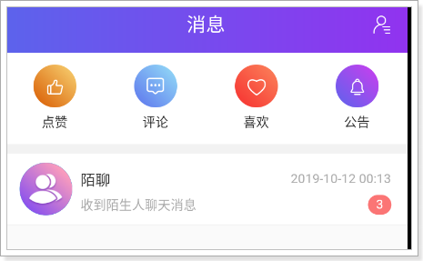

可以看到已经接收到了消息。
8.7、将用户数据同步到环信¶
需要将1~99用户注册到环信，因为我们提供的数据都是这些用户的数据。
//com.tanhua.dubbo.server.TestHuanXinApi
@Test
public void testRegisterAllUser(){
for (int i = 1; i < 100; i++) {
this.huanXinApi.register(Long.valueOf(i));
}
}

环信：
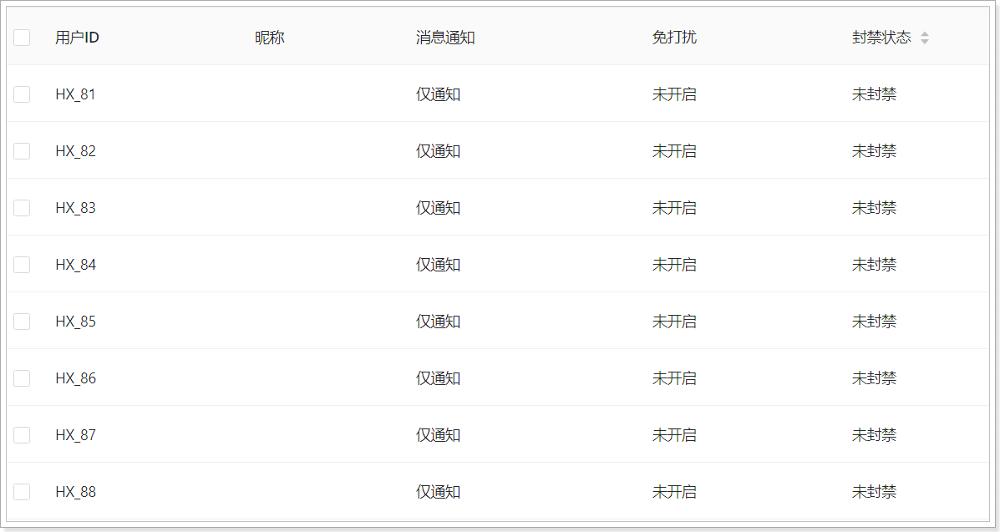
9、 添加联系人¶
点击“聊一下”，就会成为联系人（好友）。
实现：
- 将好友写入到MongoDB中
- 将好友关系注册到环信
具体的流程如下：

9.1、好友dubbo服务¶
9.1.1、定义接口¶
package com.tanhua.dubbo.server.api;
public interface UsersApi {
/**
* 保存好友关系
*
* @param userId 用户id
* @param friendId 好友id
* @return
*/
String saveUsers(Long userId, Long friendId);
/**
* 删除好友数据
*
* @param userId 用户id
* @param friendId 好友id
* @return
*/
Boolean removeUsers(Long userId, Long friendId);
}
9.1.2、编写实现¶
package com.tanhua.dubbo.server.api;
import cn.hutool.core.util.ObjectUtil;
import com.alibaba.dubbo.config.annotation.Service;
import com.tanhua.dubbo.server.pojo.Users;
import org.bson.types.ObjectId;
import org.springframework.beans.factory.annotation.Autowired;
import org.springframework.data.mongodb.core.MongoTemplate;
import org.springframework.data.mongodb.core.query.Criteria;
import org.springframework.data.mongodb.core.query.Query;
@Service(version = "1.0.0")
public class UsersApiImpl implements UsersApi {
@Autowired
private MongoTemplate mongoTemplate;
@Override
public String saveUsers(Long userId, Long friendId) {
if (!ObjectUtil.isAllNotEmpty(userId, friendId)) {
return null;
}
// 检测是否该好友关系是否存在
Query query = Query.query(Criteria
.where("userId").is(userId)
.and("friendId").is(friendId));
long count = this.mongoTemplate.count(query, Users.class);
if (count > 0) {
return null;
}
Users users = new Users();
users.setId(ObjectId.get());
users.setDate(System.currentTimeMillis());
users.setUserId(userId);
users.setFriendId(friendId);
//注册我与好友的关系
this.mongoTemplate.save(users);
//注册好友与我的关系
users.setId(ObjectId.get());
users.setUserId(friendId);
users.setFriendId(userId);
this.mongoTemplate.save(users);
return users.getId().toHexString();
}
@Override
public Boolean removeUsers(Long userId, Long friendId) {
Query query1 = Query.query(Criteria.where("userId").is(userId)
.and("friendId").is(friendId));
//删除我与好友的关系数据
long count1 = this.mongoTemplate.remove(query1, Users.class).getDeletedCount();
Query query2 = Query.query(Criteria.where("userId").is(friendId)
.and("friendId").is(userId));
//删除好友与我的关系数据
long count2 = this.mongoTemplate.remove(query2, Users.class).getDeletedCount();
return count1 > 0 && count2 > 0;
}
}
9.2、环信dubbo服务¶
9.2.1、定义接口¶
在my-tanhua-dubbo-interface中定义。
//com.tanhua.dubbo.server.api.HuanXinApi
/**
* 添加好友（双向好友关系）
* 参见：http://docs-im.easemob.com/im/server/ready/user#%E6%B7%BB%E5%8A%A0%E5%A5%BD%E5%8F%8B
*
* @param userId 自己的id
* @param friendId 好友的id
* @return
*/
Boolean addUserFriend(Long userId, Long friendId);
/**
* 删除好友关系（双向删除）
* 参见：http://docs-im.easemob.com/im/server/ready/user#%E7%A7%BB%E9%99%A4%E5%A5%BD%E5%8F%8B
*
* @param userId 自己的id
* @param friendId 好友的id
* @return
*/
Boolean removeUserFriend(Long userId, Long friendId);
9.2.2、编写实现¶
在my-tanhua-dubbo-huanxin中实现。
//com.tanhua.dubbo.server.api.HuanXinApiImpl
@Override
public Boolean addUserFriend(Long userId, Long friendId) {
String targetUrl = this.huanXinConfig.getUrl()
+ this.huanXinConfig.getOrgName() + "/"
+ this.huanXinConfig.getAppName() + "/users/HX_" +
userId + "/contacts/users/HX_" + friendId;
try {
// 404 -> 对方未在环信注册
return this.requestService.execute(targetUrl, null, Method.POST).isOk();
} catch (Exception e) {
e.printStackTrace();
}
// 添加失败
return false;
}
@Override
public Boolean removeUserFriend(Long userId, Long friendId) {
String targetUrl = this.huanXinConfig.getUrl()
+ this.huanXinConfig.getOrgName() + "/"
+ this.huanXinConfig.getAppName() + "/users/HX_" +
userId + "/contacts/users/HX_" + friendId;
try {
// 404 -> 对方未在环信注册
return this.requestService.execute(targetUrl, null, Method.DELETE).isOk();
} catch (Exception e) {
e.printStackTrace();
}
// 添加失败
return false;
}
9.3、APP接口服务¶
接口地址：https://mock-java.itheima.net/project/35/interface/api/809
在my-tanhua-server中完成。
//com.tanhua.server.controller.IMController
/**
* 添加好友
*
* @param param
* @return
*/
@PostMapping("contacts")
public ResponseEntity<Void> contactUser(@RequestBody Map<String, Object> param) {
try {
Long friendId = Long.valueOf(param.get("userId").toString());
boolean result = this.imService.contactUser(friendId);
if (result) {
return ResponseEntity.ok(null);
}
} catch (Exception e) {
log.error("添加联系人失败! param = " + param, e);
}
return ResponseEntity.status(HttpStatus.INTERNAL_SERVER_ERROR).build();
}
package com.tanhua.server.service;
import cn.hutool.core.util.StrUtil;
import com.alibaba.dubbo.config.annotation.Reference;
import com.tanhua.common.pojo.User;
import com.tanhua.common.utils.UserThreadLocal;
import com.tanhua.dubbo.server.api.HuanXinApi;
import com.tanhua.dubbo.server.api.UsersApi;
import org.springframework.stereotype.Service;
@Service
public class IMService {
@Reference(version = "1.0.0")
private UsersApi usersApi;
@Reference(version = "1.0.0")
private HuanXinApi huanXinApi;
/**
* 添加好友
*
* @param friendId 好友id
*/
public boolean contactUser(Long friendId) {
User user = UserThreadLocal.get();
String id = this.usersApi.saveUsers(user.getId(), friendId);
if (StrUtil.isNotEmpty(id)) {
//注册好友关系到环信
return this.huanXinApi.addUserFriend(user.getId(), friendId);
}
return false;
}
}
9.4、测试¶
接口测试：

Monodb数据：

环信平台好友数据：
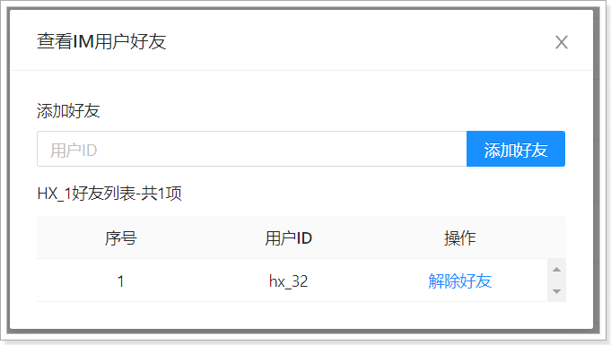
9.5、重新生成好友关系数据¶
由于之前的数据并没有完整的双向数据，所以需要重新生成，如下：
package com.tanhua.server;
import cn.hutool.core.convert.Convert;
import cn.hutool.core.util.RandomUtil;
import com.tanhua.common.pojo.User;
import com.tanhua.common.utils.UserThreadLocal;
import com.tanhua.server.service.IMService;
import org.junit.Test;
import org.junit.runner.RunWith;
import org.springframework.beans.factory.annotation.Autowired;
import org.springframework.boot.test.context.SpringBootTest;
import org.springframework.test.context.junit4.SpringRunner;
@RunWith(SpringRunner.class)
@SpringBootTest
public class TestIMService {
@Autowired
private IMService imService;
/**
* 构造好友数据，为1~99用户构造10个好友
*/
@Test
public void testUsers() {
for (int i = 1; i <= 99; i++) {
for (int j = 0; j < 10; j++) {
User user = new User();
user.setId(Convert.toLong(i));
UserThreadLocal.set(user);
this.imService.contactUser(this.getFriendId(user.getId()));
}
}
}
private Long getFriendId(Long userId) {
Long friendId = RandomUtil.randomLong(1, 100);
if (friendId.intValue() == userId.intValue()) {
getFriendId(userId);
}
return friendId;
}
}
10、联系人列表¶
用户在消息模块中，可以查看联系人列表（好友列表）。
接口文档地址：https://mock-java.itheima.net/project/35/interface/api/803
10.1、dubbo服务¶
10.1.1、定义接口¶
//com.tanhua.dubbo.server.api.UsersApi
/**
* 根据用户id查询全部Users列表
*
* @param userId
* @return
*/
List<Users> queryAllUsersList(Long userId);
/**
* 根据用户id查询Users列表(分页查询)
*
* @param userId
* @return
*/
PageInfo<Users> queryUsersList(Long userId, Integer page, Integer pageSize);
10.1.2、接口实现¶
//com.tanhua.dubbo.server.api.UsersApiImpl
@Override
public List<Users> queryAllUsersList(Long userId) {
Query query = Query.query(Criteria.where("userId").is(userId));
return this.mongoTemplate.find(query, Users.class);
}
@Override
public PageInfo<Users> queryUsersList(Long userId, Integer page, Integer pageSize) {
PageRequest pageRequest = PageRequest.of(page - 1, pageSize, Sort.by(Sort.Order.desc("created")));
Query query = Query.query(Criteria.where("userId").is(userId)).with(pageRequest);
List<Users> usersList = this.mongoTemplate.find(query, Users.class);
PageInfo<Users> pageInfo = new PageInfo<>();
pageInfo.setPageNum(page);
pageInfo.setPageSize(pageSize);
pageInfo.setRecords(usersList);
return pageInfo;
}
10.2、APP接口服务¶
10.2.1、UsersVo¶
package com.tanhua.server.vo;
import lombok.AllArgsConstructor;
import lombok.Data;
import lombok.NoArgsConstructor;
@Data
@NoArgsConstructor
@AllArgsConstructor
public class UsersVo {
private Long id;
private String userId;
private String avatar;
private String nickname;
private String gender;
private Integer age;
private String city;
}
10.2.2、IMController¶
//com.tanhua.server.controller.IMController
/**
* 查询联系人列表
*
* @param page
* @param pageSize
* @param keyword
* @return
*/
@GetMapping("contacts")
public ResponseEntity<PageResult> queryContactsList(@RequestParam(value = "page", defaultValue = "1") Integer page,
@RequestParam(value = "pagesize", defaultValue = "10") Integer pageSize,
@RequestParam(value = "keyword", required = false) String keyword) {
PageResult pageResult = this.imService.queryContactsList(page, pageSize, keyword);
return ResponseEntity.ok(pageResult);
}
10.2.3、IMService¶
//com.tanhua.server.service.IMService
public PageResult queryContactsList(Integer page, Integer pageSize, String keyword) {
PageResult pageResult = new PageResult();
pageResult.setPage(page);
pageResult.setPagesize(pageSize);
User user = UserThreadLocal.get();
List<Users> usersList;
if (StringUtils.isNotEmpty(keyword)) {
//关键不为空，查询所有的好友，在后面进行关键字过滤
usersList = this.usersApi.queryAllUsersList(user.getId());
} else {
//关键字为空，进行分页查询
PageInfo<Users> usersPageInfo = this.usersApi.queryUsersList(user.getId(), page, pageSize);
usersList = usersPageInfo.getRecords();
}
if (CollUtil.isEmpty(usersList)) {
return pageResult;
}
List<Object> userIds = CollUtil.getFieldValues(usersList, "friendId");
QueryWrapper<UserInfo> queryWrapper = new QueryWrapper<>();
queryWrapper.in("user_id", userIds);
if (StringUtils.isNotEmpty(keyword)) {
queryWrapper.like("nick_name", keyword);
}
List<UserInfo> userInfoList = this.userInfoService.queryUserInfoList(queryWrapper);
List<UsersVo> contactsList = new ArrayList<>();
//填充用户信息
for (UserInfo userInfo : userInfoList) {
UsersVo usersVo = new UsersVo();
usersVo.setId(userInfo.getUserId());
usersVo.setAge(userInfo.getAge());
usersVo.setAvatar(userInfo.getLogo());
usersVo.setGender(userInfo.getSex().name().toLowerCase());
usersVo.setNickname(userInfo.getNickName());
//环信用户账号
usersVo.setUserId("HX_" + String.valueOf(userInfo.getUserId()));
usersVo.setCity(StringUtils.substringBefore(userInfo.getCity(), "-"));
contactsList.add(usersVo);
}
pageResult.setItems(contactsList);
return pageResult;
}
10.3、测试¶
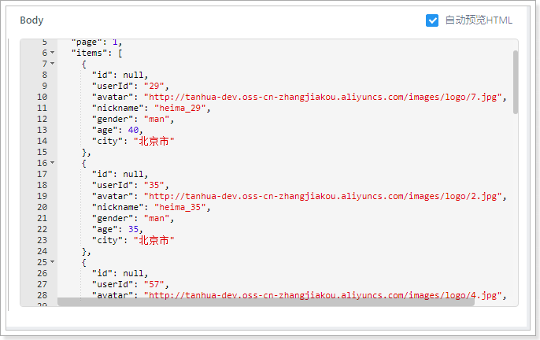